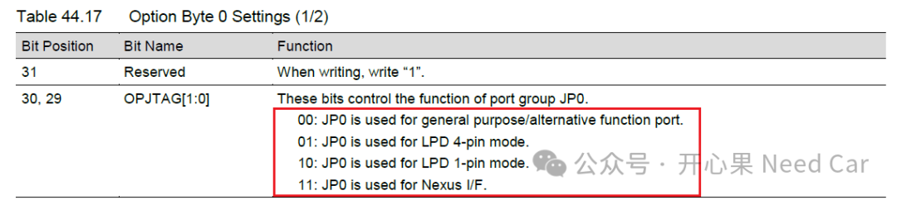

开心果 Need Car · 2026-04-02T06:20:00+08:00 · 微信原文
付费文章：当前仅保存公开试读部分，全文尚未获取。
随着信息安全的不断应用。安全调试是工程开发不可规避的核心问题之一，如何有效的管控JTAG口呢？本文，结合RH850 F1KM的ID Authentication，讨论JTAG口使能和关闭的一种方案。
主要讨论细节点包括：
ID Authentication如何实现JTAG的Lock和Unlock
ID Authentication如何有效操作
ID Authentication实现JTAG功能的注意事项
基于RFP/GHS的JTAG解锁
1.JTAG口的物理关闭
OPBT0的OPJTAG位用于控制调试端口功能，选择是否启用调试接口以及使用哪种模式。如果设置为00b，则调试接口被关闭，JP0仅作为普通 I/O 使用，这也是实现JTAG上锁的关键方法之一。示意如下： 
通过 Option Byte 0 (OPJTAG[1:0]) 设置选择模式：
01 → LPD 4-pin（类似 JTAG）
10 → LPD 1-pin（简化版）
11 → Nexus 接口，属于高级调试，支持实时跟踪（trace）、性能分析、复杂多核调试，与JTAG遵循的协议不同。
实际开发中，可以将OPJTAG位设置为11b。但是，这个方法更多的是从物理层面禁用（forbid）调试口。实际的工程项目中并不想完全禁用调试口，而是关闭。这样，可以在需要排查工程问题时，通过授权，重新使用JTAG进行调试，以便于排查问题。
2.通过软件使能和关闭JTAG的一种方案